7.1 Redis简介
Redis 是一个开源（BSD许可）的，内存中的数据结构存储系统，它可以用作数据库、缓存和消息中间件。 它支持多种类型的数据结构，如 字符串（strings），散列（hashes），列表（lists），集合（sets），有序集合（sorted sets）与范围查询，bitmaps，hyperloglogs和地理空间（geospatial）索引半径查询。 Redis 内置了复制（replication），LUA脚本（Lua scripting），LRU驱动事件（LRU eviction），事务（transactions）和不同级别的磁盘持久化（persistence），并通过Redis哨兵（Sentinel）和自动分区（Cluster）提供高可用性（high availability）。
正是因为上述特性，在企业环境中，Redis被大量使用。
Redis是以源码方式发布的，在Linux、Mac下都需要本地编译后使用。官方并不支持Windows版本，而且在生产环境下也少有见到在Windows下使用Redis的。
在学习过程中，为了简化环境起见，我们选择在Windows下安装Redis预编译版本。
根据Redis官方文档所述，其支持8中数据类型，本小节我们介绍经常使用到的前5种数据类型。
- Binary-safe strings.
- Lists: collections of string elements sorted according to the order of insertion. They are basically linked lists.
- Sets: collections of unique, unsorted string elements.
- Sorted sets, similar to Sets but where every string element is associated to a floating number value, called score. The elements are always taken sorted by their score, so unlike Sets it is possible to retrieve a range of elements (for example you may ask: give me the top 10, or the bottom 10).
- Hashes, which are maps composed of fields associated with values. Both the field and the value are strings. This is very similar to Ruby or Python hashes.
- Bit arrays (or simply bitmaps): it is possible, using special commands, to handle String values like an array of bits: you can set and clear individual bits, count all the bits set to 1, find the first set or unset bit, and so forth.
- HyperLogLogs: this is a probabilistic data structure which is used in order to estimate the cardinality of a set. Don't be scared, it is simpler than it seems... See later in the HyperLogLog section of this tutorial.
- Streams: append-only collections of map-like entries that provide an abstract log data type. They are covered in depth in the Introduction to Redis Streams.
7.1.1 安装
在https://github.com/microsoftarchive/redis/releases 这里下载Windows预编译版本的Redis，为了简便起见，我们选择解压包文件。
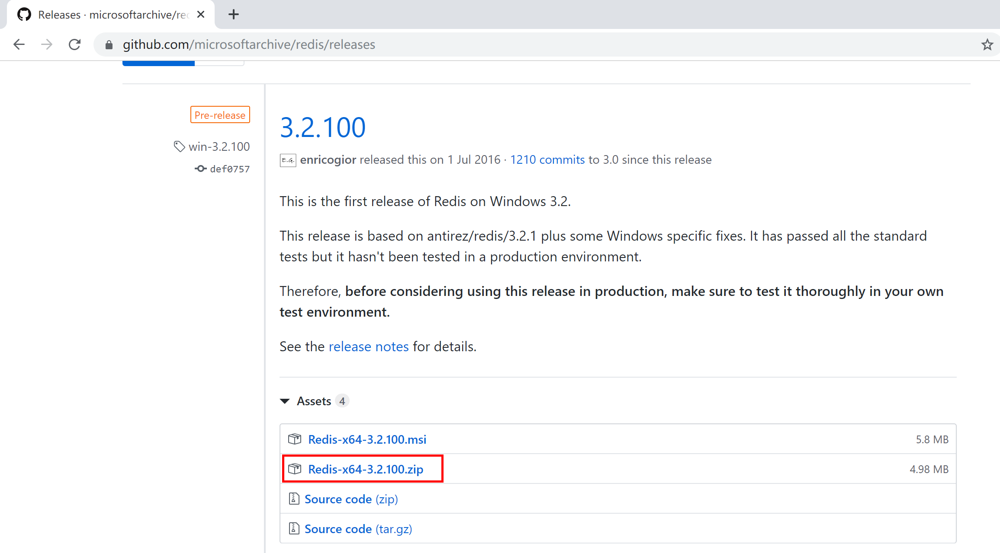
下载后，将其解压到用户目录中，例如C:\Users\Kevin\Redis-x64-3.2.100。
双击redis-server.exe运行Redis服务器，可以看到Redis服务在6379端口上已经开放了。
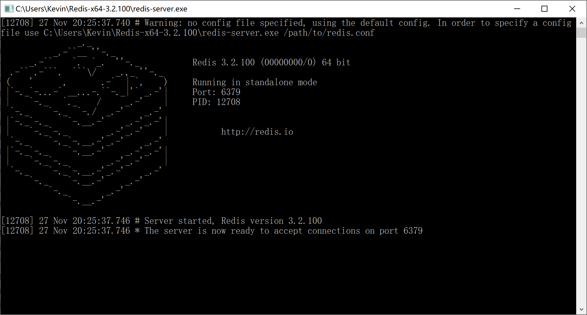
7.1.2 测试
双击redis-cli.exe启动Redis客户端，确定其已经连接到本地Redis服务。
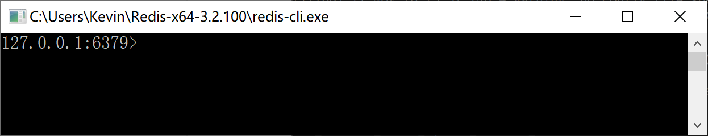
7.1.2.1 字符串的增删改查
输入命令set name 'Kevin'在Redis中增加一个Key-Vaule记录，并使用get name查询对应的值，如下：
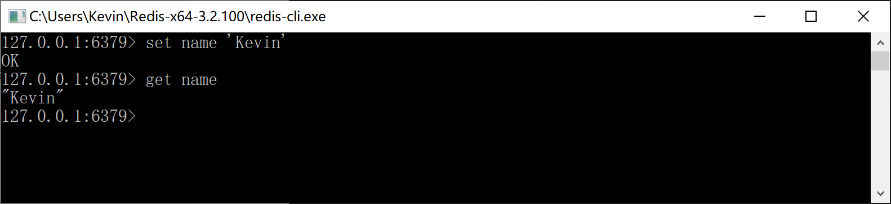
输入命令set name 'Roy'，将name更新为Roy，然后再查询其值，如下：
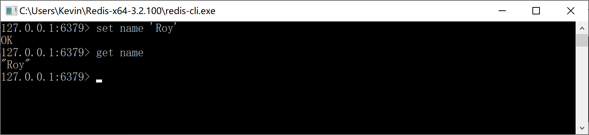
输入命令del name，删除name的值，然后使用查询get name，返回nil。
我们用exists name命令检查name这个key是否再Redis中存在，返回0表示不存在，也就是说上面的删除命令是正确执行了的。
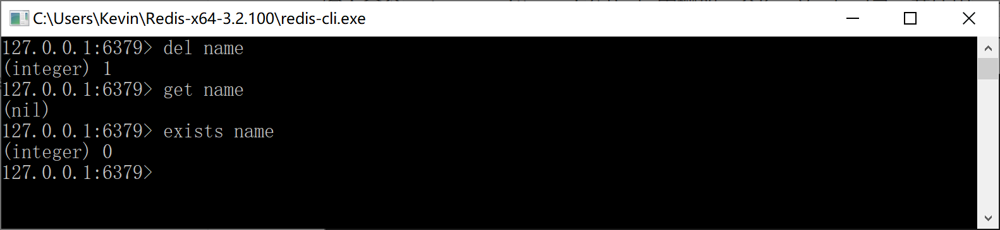
7.1.2.2 List集合的增删改查
Redis列表是简单的字符串列表，按照插入顺序排序。你可以添加一个元素到列表的头部（左边）或者尾部（右边）。
一个列表最多可以包含 2^32 - 1 个元素（40多亿）。
输入命令lpush userList 'Kevin' 'Roy'，Redis返回2，说明其存入了两个值。
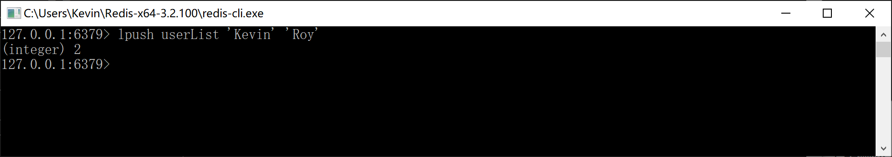
输入命令lrange userList 0 -1，可以查询到userList这个List中的所有元素。
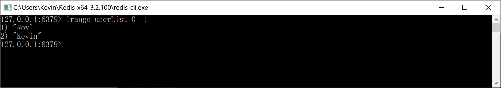
输入命令rpush userList 'GoodMan'，往List的尾部增加一个元素。
输入命令lpush userList 'Wonderful'，往List的头部增加一个元素。
然后查询所有的List元素，确认Wonderful增加在头部，GoodMan追加在尾部。
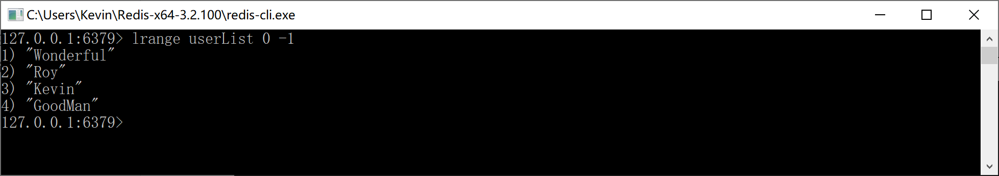
输入命令lset userList 1 'Roy Zhang'，将List中的第2个元素（Roy）更新为“Roy Zhang”，查询List确认是否正确修改。
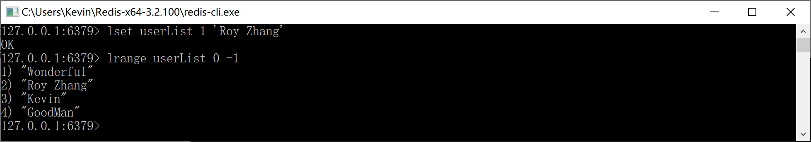
输入命令lrem userList 0 'Wonderful'，删除List中的第1个元素，并查询确认。
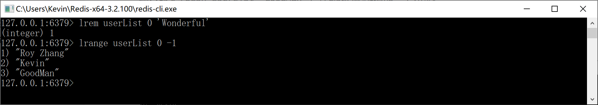
7.1.2.3 Set集合的增删改查
Redis 的 Set 是 String 类型的无序集合。集合成员是唯一的，这就意味着集合中不能出现重复的数据。
Redis 中集合是通过哈希表实现的，所以添加，删除，查找的复杂度都是 O(1)。
集合中最大的成员数为 2^32 - 1（40多亿）。
输入命令sadd userSet 'Kevin' 'Roy' 'GoodMan'，往userSet中添加3个元素。
然后执行命令smembers userSet命令，查询userSet这个Set集合中的元素。
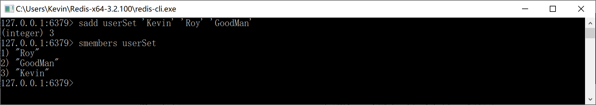
输入命令srem userSet 'GoodMan'，删除userSet中的“GoodMan”元素。
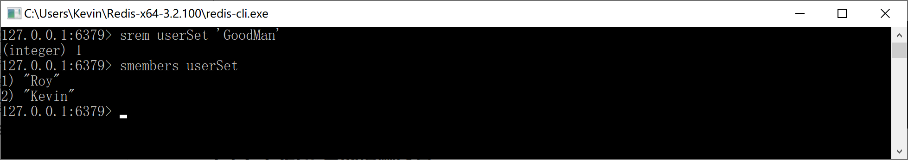
输入命令sadd userSet 'Wonderful'，往userSet这个Set集合中添加“Wonderful”元素。查询后发现新加入的元素添加到了第2位，当然，只是显示问题，Set中的元素本来就没有顺序。
输入命令sadd userSet 'Kevin'，Redis返回0，是因为userSet中本来就有“Kevin”这个元素，所有无法再次添加。
7.1.2.4 Hash集合的增删改查
Redis Hash 是一个 string 类型的 field 和 value 的映射表，hash 特别适合用于存储对象。
Redis 中每个 hash 可以存储 2^32 - 1 键值对（40多亿）。
输入命令hset userHset 'user1' 'Kevin'创建Key为userHset的hash集合，往其中添加一条记录：字段为user1，值为Kevin，Redis返回添加成功的记录数为1。
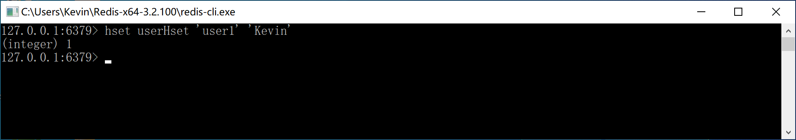
输入命令hset userHset 'user2' 'Roy'，往userHset中添加第2条记录。
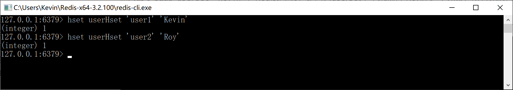
使用命令hlen userHset查询Hash集合的记录数，此处应该返回2条。
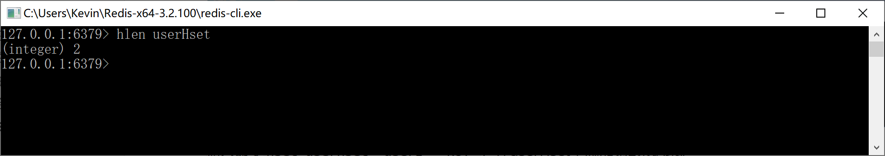
输入命令hkeys userHset查询Hash集合中所有的字段（Key）。
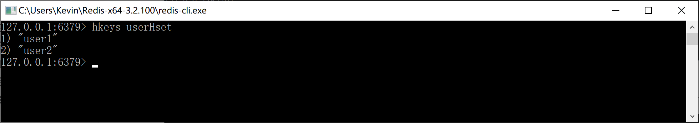
输入命令hvals userHset查询Hash集合中所有的值（Value）。
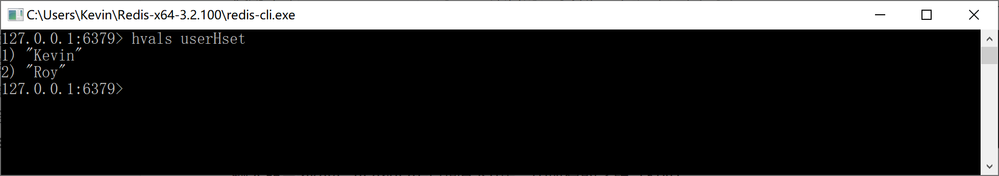
输入命令hgetall userHset查询userHset这个哈希集合中的所有字段和值（Key Value）。
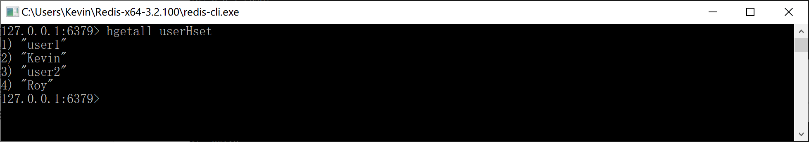
输入命令hget userHset 'user1'查询userHset这个哈希集合中Key为user1所对应的值（Value）。
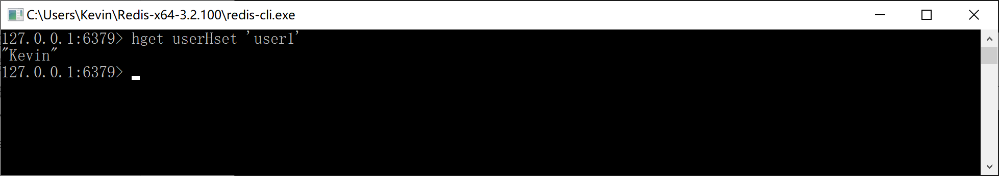
输入命令hset userHset 'user1' 'Kevin Zhang'更新userHset这个哈希集合中Key为user1所对应的值（Value），注意Redis返回0，说明删除操作并不会往Redis中增加记录。
然后使用命令hget userHset 'user1'查询user1，检查值是否被更改。
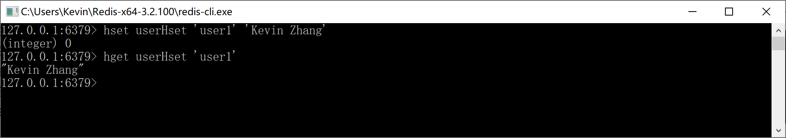
输入命令hdel userHset user1在userHset这个哈希集合中删除user1和对应的值（当前为Kevin Zhang），Redis返回1，说明删除了一个Key-Value值对。
然后使用命名hgetall userHset检查是否删除成功。
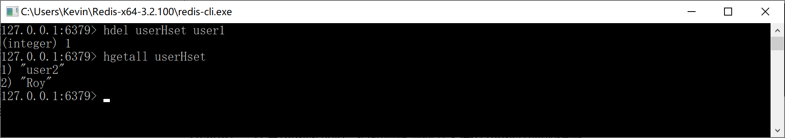
7.1.2.5 Sorted Set集合的增删改查
Redis 有序集合和集合一样也是string类型元素的集合，且不允许重复的成员。
不同的是每个元素都会关联一个double类型的分数。redis正是通过分数来为集合中的成员进行从小到大的排序。
有序集合的成员是唯一的，但分数(score)却可以重复。
集合是通过哈希表实现的，所以添加，删除，查找的复杂度都是O(1)。 集合中最大的成员数为 2^32 - 1（40多亿）。
输入命令zadd userZset 1 'Kevin'，为userZset添加成员Kevin，分数为1。
输入命令zadd userZset 2 'Roy'，为userZset添加成员Roy，分数为2。
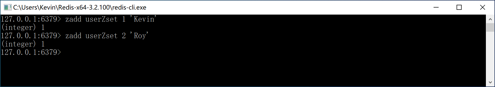
输入命令zrange userZset 0 -1按照分数从小到大查询集合中的元素。
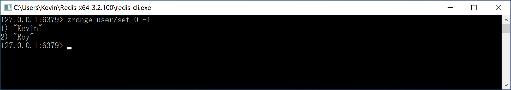
输入命令zrevrange userZset 0 -1按照分数从大到小查询集合中的元素。
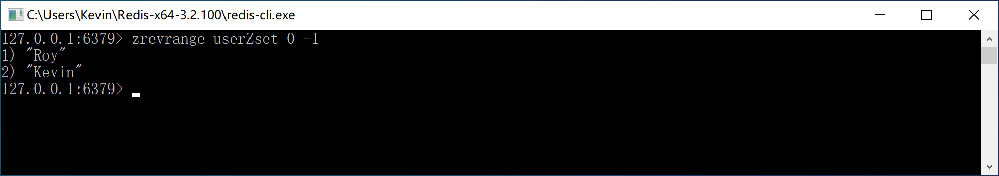
输入命令zscore userZset 'Kevin'查询Kevin这个元素的分数。
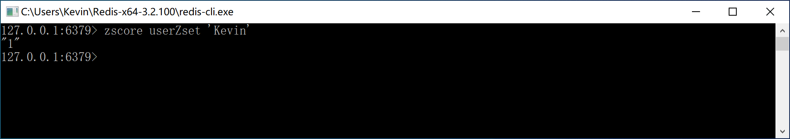
输入命令zrem userZset 'Kevin'删除集合中的Kevin这个元素。
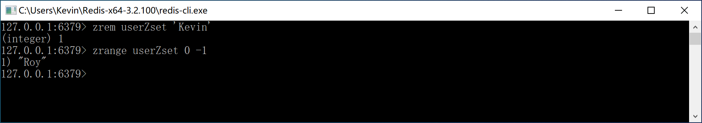